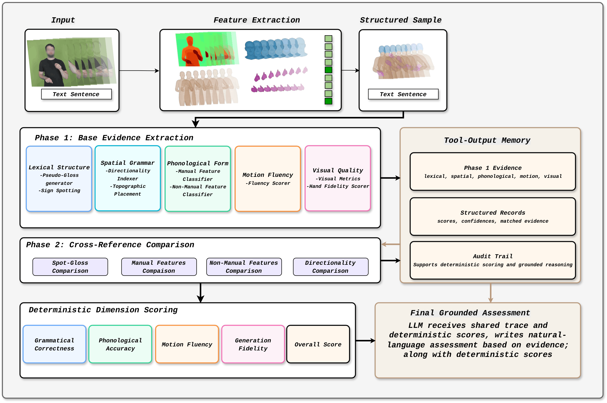

Overview of the BackTranslation2.0 (BT2) pipeline. Given a source sentence and generated sign output, multi-modal extraction produces a structured sample for segment- and sequence-level analysis. Phase 1 base tools extract lexical, spatial, phonological, motion, and visual evidence stored in a shared memory trace. Phase 2 comparison tools cross-reference this evidence against linguistic expectations to produce grounded judgements. Deterministic aggregation yields per-dimension scores and an overall understandability score, and a final LLM stage writes a grounded natural-language assessment.
Sign Languages (SLs) are the primary means of communication for millions of Deaf individuals, yet existing evaluation metrics for generated SL remain simplistic and poorly aligned with human judgements. We introduce BackTranslation2.0, a linguistically grounded evaluation metric for text-to-sign translation that moves beyond naïve backtranslation. Our approach adopts an agentic framework in which a deterministic pipeline orchestrates a suite of specialised tools to assess four scoring dimensions — grammatical correctness, phonological accuracy, motion fluency, and generation fidelity — aligned with human rater assessments.
Tool outputs are not treated independently: a set of LLM-based cross-referential comparison modules evaluates consistency across tools and checks outputs against linguistic expectations, enabling structured reasoning over grammatical, phonological, and motion-level evidence. Final dimension scores are computed through deterministic weighted formulas over validated tool outputs. To validate BackTranslation2.0, we introduce and evaluate on a British Sign Language (BSL) dataset annotated by native Deaf raters across the same quality dimensions, benchmarking against six baseline metrics. Our method demonstrates strong correlation with human judgements across all dimensions, providing a more comprehensive, interpretable, and linguistically principled evaluation framework for sign language production systems.
BackTranslation2.0 (BT2) is a deterministic agentic framework for linguistically grounded evaluation of text-to-sign translation. Rather than relying on a single end-to-end metric, BT2 runs a fixed two-phase pipeline of specialised tools that assess grammatical correctness, phonological accuracy, motion fluency, and generation fidelity.
Multi-modal feature extraction produces a structured sample at segment and sequence level. Specialised tools extract lexical, spatial, phonological, motion, and visual evidence, stored in a shared Tool-Output Memory.
LLM-based modules evaluate consistency across Phase 1 tool outputs and check them against linguistic expectations, enabling structured reasoning over grammatical, phonological, and motion-level evidence. An audit trail supports deterministic scoring and grounded reasoning.
Final dimension scores are computed via deterministic weighted formulas over validated tool outputs. A final LLM stage receives the shared trace and deterministic scores to produce an auditable natural-language assessment.
BT2 evaluates four dimensions aligned with how native Deaf raters assess sign language quality.
@article{backtranslation2_2026,
title = {BackTranslation2.0: A Linguistically Motivated Metric
to Assess Sign Language Production},
author = {Cory, Oliver and Ivashechkin, Maksym and Ranum, Oline and
Low, Jianhe and Fish, Edward and Pelykh, Anton and
Sahin, Karahan and Mercanoglu Sincan, Ozge and
Bowden, Richard},
booktitle = {European Conference on Computer Vision (ECCV)},
year = {2026},
}